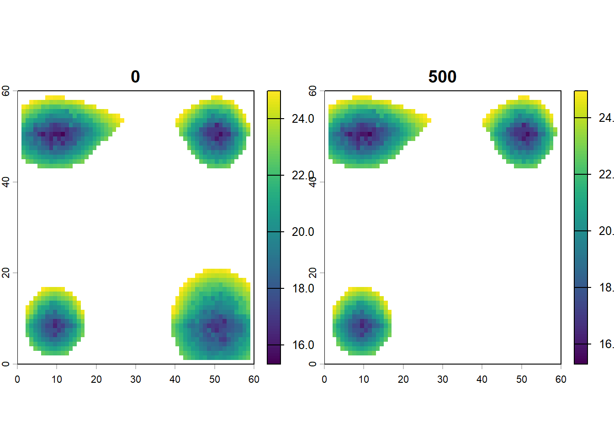
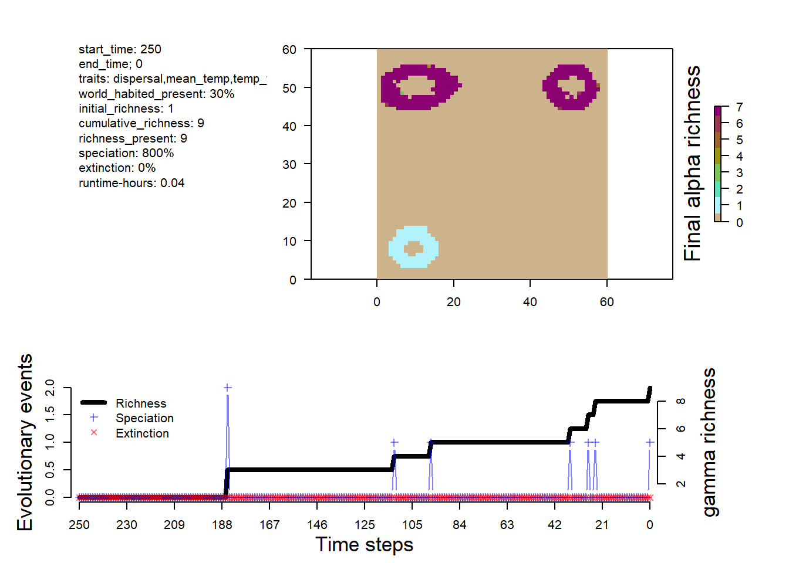
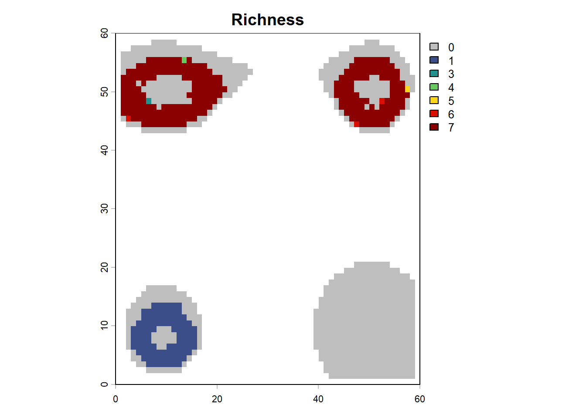
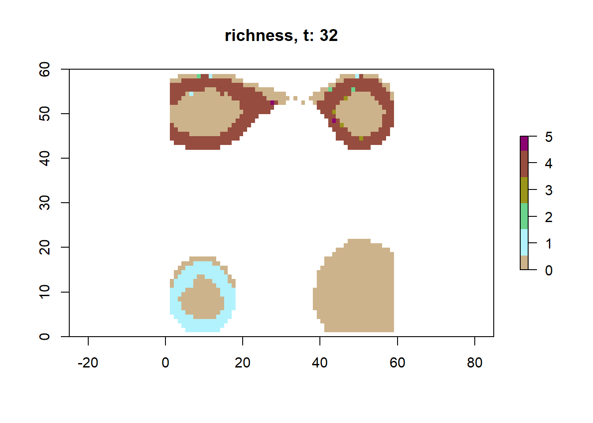
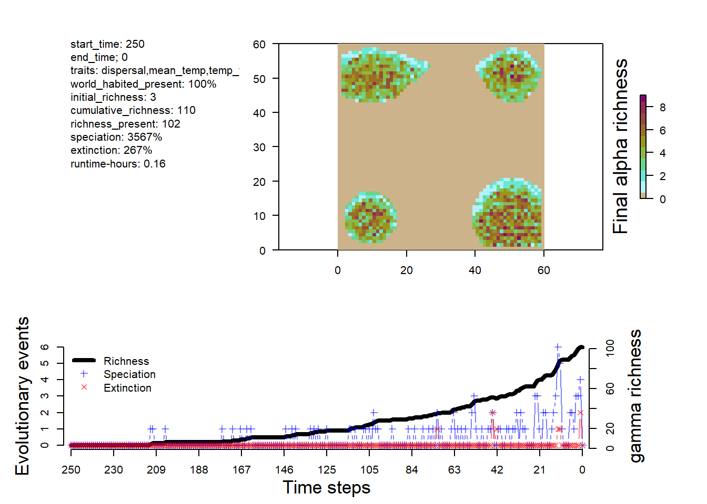
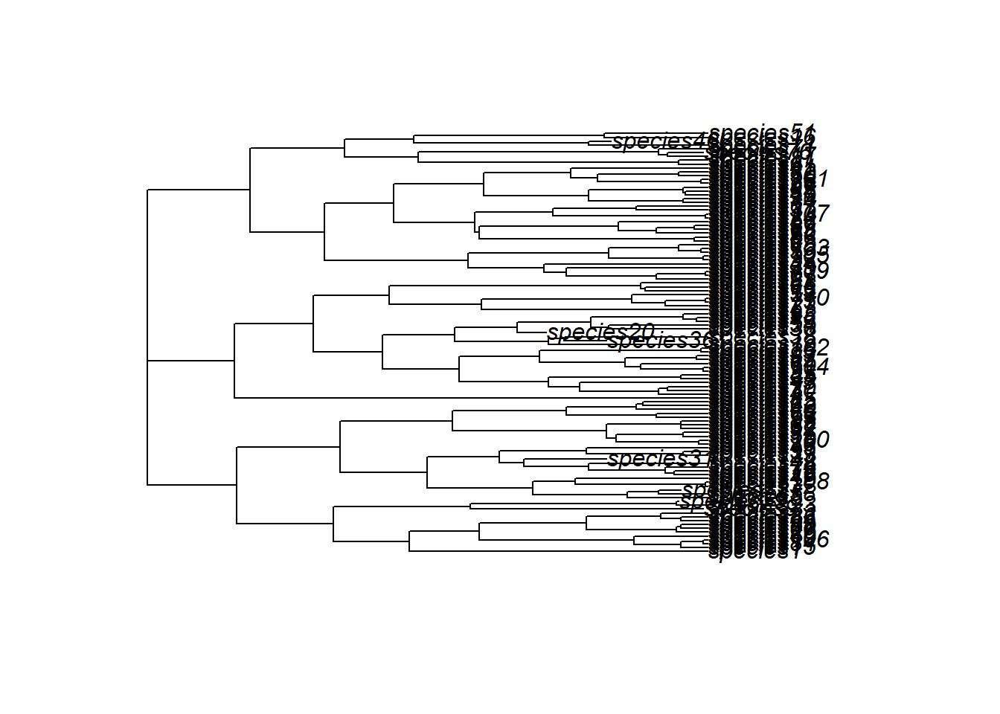

Building and running custom mechanistic eco-evolutionary biodiversity models
First things first, let’s get you up and running with gen3sis. In this setup guide, we will:
Set up the R environment
Understand the basics
Run a basic simulation
Customize simulations
Troubleshoot
1. Setting up the R environment
We’ll need the gen3sis R package along with configuration and landscape files from the course repository. Please download the repo and create a new R script in the same directory.
Put it somewhere on your machine that you can readily access
Unzip the folder
Open up RStudio from the .Rproj
Setting the needed packages
You can copy and paste code from the sections below, or use myscript.R.
# Function to check and install packages if they are not already installedload_install_pkgs <-function(package_names) {for (package in package_names) {if (!require(package, character.only =TRUE)) {install.packages(package)print(paste("Installing", package))library(package, character.only =TRUE) } }}# Vector of packages to load and install if necessarypackages_to_load <-c("gen3sis", "here", "terra", "ape")# Call the function with the vector of package namesload_install_pkgs(packages_to_load)# print gen3sis versionprint(paste("gen3sis version:", packageVersion("gen3sis")))
[1] "gen3sis version: 1.6.0"
You could also install the most recent version of the package from GitHub using devtools. But hold off on this today so we’re all working with the same version.
Landscape and configuration files are bundled in this repository under data/space/ and data/config/. If you have an optional distances_full folder, place it inside data/space/ alongside distances_local to speed up some simulations.
# set path to directory containing the landscapelandscape_dir <-here("data/space")# look at folder structurelist.files(landscape_dir)
[1] "distances_local" "landscapes.rds"
# set path to config_fileconfig_file <-here("data/config/config_simple.R")
2. Understanding the basics
Gen3sis is an engine that simulates eco-evolutionary processes at the population level. It utilizes a landscape containing environmental variables that evolve over time, alongside a configuration file housing the eco-evolutionary rules. Read more here
2.1 Landscape
This tutorial utilizes a theoretical archipelago system. Each site 1x1 km, features temperature (i.e. mean, minimum and maximum temperature) and has a landscape structure that is generated by approximating topography, uplift dynamics, and lapse rate. Additionally, it incorporates global temperature and sea level changes dating back to the past 5 million years (Ma).
# load landscapeslc <-readRDS(file.path(landscape_dir,"landscapes.rds"))# class(lc) "list"# get names of landscape variablesnames(lc)
# get first time stepfirst_step_pos <-ncol(lc$mean_temp)# get first 10 sites of mean temperature for the 2 last time steps and the first (oldest) time steplc$mean_temp[100:110, c(1:4, first_step_pos)]
x y 0 1 500
100 39.5 58.5 NA NA NA
101 40.5 58.5 NA NA NA
102 41.5 58.5 NA NA NA
103 42.5 58.5 NA NA NA
104 43.5 58.5 NA NA NA
105 44.5 58.5 NA NA NA
106 45.5 58.5 NA NA NA
107 46.5 58.5 NA NA NA
108 47.5 58.5 NA 23.82152 NA
109 48.5 58.5 NA 23.56207 NA
110 49.5 58.5 24.89379 23.39746 24.85717
# plot mean_temp for first and last time stepplot(terra::rast(lc$mean_temp[ ,c(1:3, first_step_pos)]))

🏋💻 Exercise [max 10 min] Create a way to visualize the last 100 time steps of this gen3sis input. If possible think of abstracting for any x,y,z1,z2,z3… temporal data-frame. If possible, try to make a function.
Answer:
# solution 1for (ti in100:0) { ri <- terra::rast(lc$elevation[,c("x", "y", as.character(ti))], type="xyz")plot(ri, main=paste(ti/100, "Ma")) # divide by 100 to get Ma since 1 time-step =10 kyrSys.sleep(0.1)}# solution 2# define animation functionplot_landenv <-function(df, times=100:0, reverse=F, speed=0.1){# df is a data frame with x, y coordinates and time steps as columns with environmental variables# reverse is a boolean. Reverse the order of time steps?# times is either a vector of time steps or a character "all"# speed in seconds#df <- lc$tempif (times[1]=="all"){ times <-names(df)[!names(df)%in%c("x", "y")] }if (reverse){ times <-rev(times) }for (ti in times){ ri <- terra::rast(df[,c("x", "y", ti)], type="xyz")plot(ri, main=paste(as.numeric(ti)/100, "Ma"))Sys.sleep(speed) }}# call animation functionplot_landenv(lc$elevation, times=c(100:0), speed=0.1)# example of plotting entire time series# plot_landenv(lc$min_temp, times="all", reverse=T, speed=0.03)
2.2 Config
Open this config file in Rstudio or any text editor to see the rules that will be applied to the landscape.
# load configcf <-create_input_config(config_file =here("data/config/config_simple.R"))# list all main elements of the config filenames(cf$gen3sis)
🏋💻 Exercise [max 10 min] Open the config file config_simple and go though the eco-evolutionary rules that will be applied to the landscape.
Answer:
Settings
We start our simulation at the latest avaiable time, i.e. 5Ma, which corresponds to time step 500 since 1 time-step = 10 kyr. We end it a the latest available time-step. Sometimes, simulations can go forever, to avoid this we limit the maximum total number of species alive in a simulation to 50000 with max_number_of_species and the maximum number of species within one site to 20000 with max_number_of_coexisting_species. This stops and flags simulations that generate too many species (time constrain). We define which traits we will consider in our simulation with traits_names, in our example, species have a dispersal ability a optimum temperature and a temperature width trait.
Observer
The observer function saves and plot changes (real-time during model execution) over time in the conditions of the virtual world (biotic and abiotic) by saving custom information at designated time steps.
Initialization
The create_ancestor_species function creates the first specie(s) in the simulation. In this case, we create one species spread across all avaiable sites with low dispersal ability, optimum temperature at 20 degrees C and a temperature width (+-1).
Dispersal
The dispersal function iterates over all species populations and determines the connectivity between sites, crucial for trait evolution and specialization, as well as the colonization of new sites. In our example, species dispersal is stochastic and uniform across all species. I.e. an exponential distribution with the rate denominator as the dispersal trait value.
Speciation
The speciation iterates over every species separately, registers populations’ geographic occupancy (species range), and determines when geographic isolation between population clusters is higher than a user-defined threshold, triggering a lineage splitting event of cladogenesis. The clustering of occupied sites is based on the species’ dispersal capacity and the landscape connection costs. Over time, disconnected clusters gradually accumulate incompatibility, analogous to genetic differentiation. When the divergence between clusters is above the speciation threshold, those clusters become two or more distinct species, and a divergence matrix reset follows. On the other hand, if geographic clusters come into secondary contact before the speciation occurs, they coalesce and incompatibilities are gradually reduced to zero.
Evolution
Think of it as trait evolution. Clustered populations (exchanging genes) have their trait homogenized. If weighted by abundance a trait of a population that is doing well in a site, as dictated by the ecology function, will contribute more to the average trait of a cluster. Populations mutate based on a normal distribution with standard deviation 0.001, possibly increasing or decreasing species optimum temperature.
Ecology
The ecology function determines the abundance or presence of the populations in occupied sites of each species. The function iterates over all occupied sites and updates the species population abundances or presences on the basis of local environmental values, updated co-occurrence patterns and species traits. In this example we use only presence/absence data, i.e. abundances 0 or 1.
3. Run a basic simulation
It’s time to run a simulation, we use the config_simple and archipelago system we are familiar with and set verbose to 2 in order to get more information on the progress of the simulation.
# run simulationsim <-run_simulation(config =here("data/config/config_simple.R"), landscape =here("data/space"), output_directory =here("output"))
On sim we store the simulation output summary, while most of the information and large data is/should be stored in the output directory according to the observer function. If you don’t want to run the simulation, you can load the sim object from the repo.
sim_path <-here("output/config_simple/sgen3sis.rds")if (file.exists(sim_path)) { sim <-readRDS(sim_path)} else {message("Precomputed output not found at output/config_simple. Running the simple simulation now...") sim <-run_simulation(config =here("data/config/config_simple.R"),landscape =here("data/space"),output_directory =here("output"),verbose =0 )}
In addition to the simulation output summary, we include a flag indicating whether the simulation completed successfully or the criteria for stopping, such as an excessive number of species. This section also provides system information and simulation-specific parameters.
#check elements inside the sim objectnames(sim)
[1] "summary" "flag" "system" "parameters"
# visualize the outputsplot_summary(sim)

# plot richness from summary in custom fashionna_mask <-is.na(lc$elevation[,"0"])rich <- sim$summary$`richness-final`rich[na_mask,3] <-NAplot(terra::rast(rich, type="xyz"), col=c("grey", gen3sis::color_richness_non_CVDCBP(max(rich, na.rm=T))), main="Richness")

# plot richness at time step 32 using saved datasps32 <-readRDS(here("output/config_simple/species/species_t_32.rds"))lc32 <-readRDS(here("output/config_simple/landscapes/landscape_t_32.rds"))plot_richness(sps32, lc32)

Beyond the custom storage mediated over the observer function, we have a standard phylogeny stored as phy.nex as well as a copy of the config used for the simulation.
We will also change the observer function to save the presence/absence matrix for each time step.
conf$gen3sis$general$end_of_timestep_observer =function(data, vars, config){plot_richness(data$all_species, data$landscape)# make p/a matrices out_dir <- config$directories$outputif(!file.exists(file.path(out_dir,"occs"))){dir.create(file.path(out_dir, "occs")) }# cell names all_cells <-rownames(data$landscape$coordinates)# get 0 for absence and 1 for presence in each grid cell asp <-do.call(cbind,lapply(data$all_species, FUN =function(x) {ifelse(all_cells %in%names(x$abundance), 1, 0) }))# colnames are species namescolnames(asp ) <-unlist(lapply(data$all_species, function(x){x$id}))# column bind with x/y coordinates presence_absence_matrix <-cbind(data$landscape$coordinates, asp)saveRDS(presence_absence_matrix, file=file.path(out_dir,"occs", paste0("pa_t_",vars$ti, ".rds")))}
The dynamics is different from the simple simulation, with more species and a some extinction events.


🏋💻 Exercise [15 min] Review the config_M2_TH.R file and try to understand what it’s doing. Consider how you might modify the configuration or apply it to a specific research question.
5. Troubleshoot
Creating or modifying a gen3sis configuration can definitely lead to some weird errors, especially since it’s so flexible. That’s the downside, along with the steep learning curve. But if you’re not too overwhelmed, you’re doing great!
Here are some handy debugging tips for when you run into those pesky errors:
browser(): This function lets you pause the execution and explore what’s going on. It’s like a pit stop where you can check out variables and step through the code.
To make your R session enter browser mode whenever you hit an error, you can use: options(error = recover). This will help you diagnose and fix issues more easily.
You can also condition browser calls, which is very useful when you want to stop execution at a specific time step or when a certain condition is met. Here’s an example:
# Use 'stop_time' to halt execution at a specific timestep in the landscape object:stop_time <-"62"get_dispersal_values <-function(n, species, landscape, config) {if (landscape$timestep == stop_time) {browser() }# You can also check the 'vars' object for the current timestep: vars <-dynGet("vars", inherits =TRUE)if (vars$ti == stop_time) {browser() }}